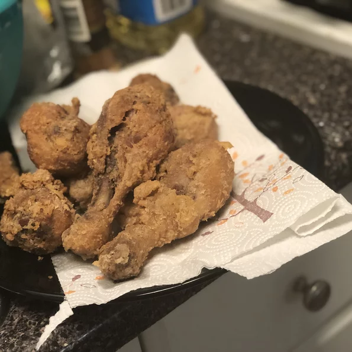

Fried Chicken

Fried Chicken recipe
This Fried Chicken is the best.
- 8 pieces of chicken
- 1/4 gallon of Buttermilk
- Half bottle of Frank's Hot Sauce
- 1/4 jar of Pickle Juice
- Garlic Powder
- Onion Powder
- Paprika
- Flower
- Salt
- Pepper
Steps
- Mix garlic powder and onion powder. Coat all chicken generously
- In bowl, pour Buttermilk, Hot sauce, and pickle juice
- Place chicken in bowl and cover with mixture
- Place in Fridge for 24 hours
- Mix Flour, salt, and pepper in large zip lock
-
Remove chicken from buttermilk mixture and coat generously with flour
mixture
- Heat oil and paprika in pan on medium
-
Once heated, place chicken in pan and let fry for about 8-10 minutes per
side
- Heat Over on 425
- Place chicken on cooking sheet and place in oven for 5 minutes
- Remove from oven and enjoy